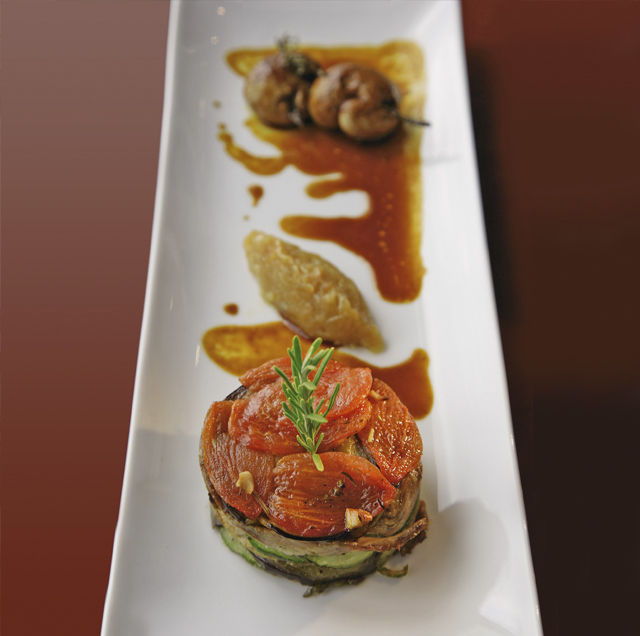
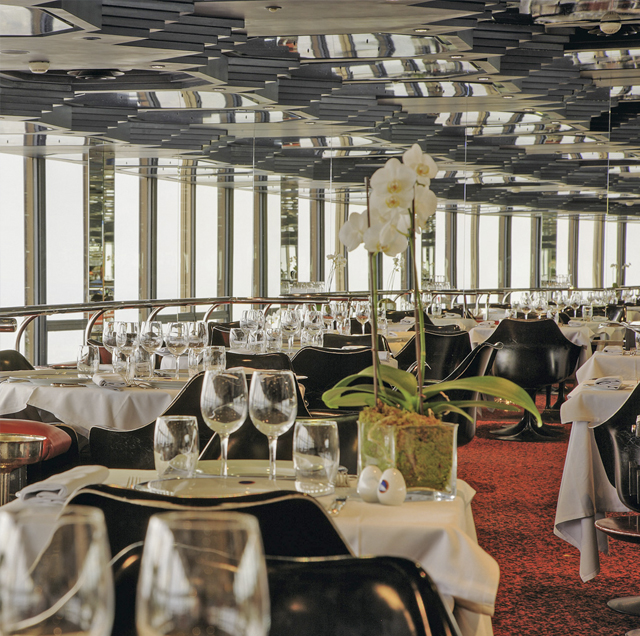

What a view! Le Ciel de Paris (the heavens of Paris) is a must for Parisians wanting to show visitors their city. Opened in 1973, the panorama restaurant will be celebrating its 25th anniversary in 2008. Located on the 56th floor of the Tour Maine Montparnasse and at a height of 200 metres, it offers absolutely breathtaking views of Paris and its attractions and is certainly a place to discover or revisit! Hardly have you entered the restaurant than you are drawn almost magically to the panoramic views that it offers. Its giant glass walls conspire to make it seem as though the restaurant is hanging weightlessly over the city. It is a rare location from where you can look out over the city, taking in the Eiffel Tower, the historical locations and the famous attractions that have given Paris its character. No matter what time of year or what time of day or night, the views are always spectacular, providing a romantic cityscape that is full of contrast and poetry. Gourmets will be delighted to find that not only do they have Paris at their feet, but they can also enjoy magnificent cuisine. The Chef, Jean-François Oyon, worked in the Taillevent and in the Jules Verne and cooked with Joël Robuchon. He prepares fine French cuisine that is internationally inspired; guests can sample his Wild Duck with Forest Mushrooms, Fois Gras in Poppy Seed Dough, Perch with Sweet & Sauer Sauce in Banana Leaves, and Lobster Dough Pockets with Orange Sauce. The mood changes delightfully depending on the occasion; sometimes it’s couples enjoying a romantic dinner and sometimes it’s business people appreciating the atmosphere. The American Bar (open until 1 a.m.) is the place to go for night owls and in addition to its cocktails also serves up complimentary views of Paris by night.


{kind=link}
{kind=link}